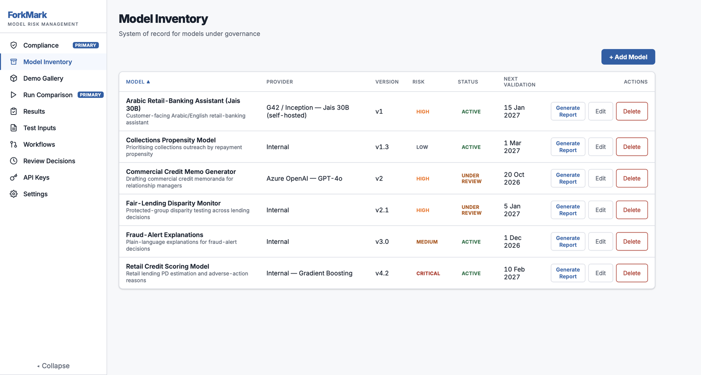
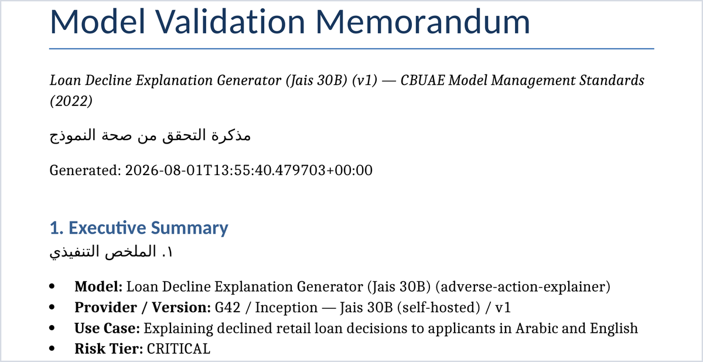

ForkMark is a model validation platform for AI systems. It installs on your own servers, tests the models you have in production, records your reviewers' sign-off, and generates a CBUAE-mapped validation memorandum. No prompt, output or customer record leaves your network.

Model inventory — the system of record for every AI model under governance.
The gap
An AI answers the same question differently twice, and differently again when the vendor ships an update. The methods that validate a credit scorecard produce nothing a supervisor will accept for a language model, so the model waits in review while the business waits on the model.
Since February 2026 the CBUAE treats an AI system as a model under §2(a), which puts eight testable obligations on it: inventory and risk-rate it, test it for bias annually and on every upgrade, show its outputs are grounded, keep a human accountable, disclose in Arabic and English, and hold vendor models to the same standard. The obligation applies to the AI you have deployed today.
ForkMark is the tooling for that work. It gives a validation function a repeatable way to test an AI system, record the challenge, and produce the evidence file.
How it works
Add it to the inventory with an owner, use case and risk tier, or stream its outputs in through the Python SDK.
Numerical grounding against source documents, and group-disparity testing across protected characteristics on identical inputs.
An independent reviewer logs findings, rationale and a verdict against their own name and timestamp.
Assembled from the run history, mapped to the clauses it satisfies, exported for your existing MRM system.
Champion versus challenger: the model in production is retained as the baseline, so an upgrade is tested against the version it replaces. §3(c) expects that comparison on every release.
The output
Nine sections, assembled by the platform from the model's own evaluation history rather than typed into a template afterwards. Every finding traces back to the run that produced it.

The sample covers an Arabic retail-banking assistant built on Jais 30B, rated high impact. The scenario and the model outputs in it were authored by us for demonstration; the memorandum itself is the platform's own output, generated from the evaluation records.
CBUAE coverage
The February 2026 guidance sets eight testable obligations. Six of them compute now. The other two are in development, and we would rather say so here than discover it with you in a pilot.
| Obligation | How ForkMark satisfies it | Status |
|---|---|---|
| Inventory of every AI, with a risk rating§2(f) · §8(d) | Model inventory with risk tiers, linked to every validation run | Live |
| Bias tested yearly and on every upgrade§3(c) | Group-disparity fairness test, re-run per version against the retained baseline | Live |
| No unsupported or unsafe outputs§5(d) | Numerical grounding check against the approved source document | Live |
| Meaningful human oversight and challenge§7(a) · §6(b) | Reviewer decisions and written rationale captured per run, with attribution | Live |
| Data provenance and audit trails§5(a) | Append-only audit log with role-based access control | Live |
| Disclosure in Arabic and English§4(b) | Bilingual executive summary generated in-app | Live |
| Stress-testing and continuous monitoring§5(d) · §6(a) | Safety and jailbreak suite, drift monitoring | In build |
| Vendor AI held to the in-house standard§9(c) | The same suite applied to vendor models; Jais, Falcon and GPT connectors | In build |
Clause references are to the CBUAE Guidance Note on Artificial Intelligence and Machine Learning (11 February 2026), read with the binding Model Management Standards and Guidance (2022). The platform also carries requirement metadata for the UAE Joint Guidelines (2021), the EU AI Act, SR 26-2 and PRA SS1/23. Provided as engineering guidance, not legal advice.
Deployment and security
The architecture is the answer to the objection. Everything runs inside your perimeter, and your security team can read the code before anything is installed.
SQLite or PostgreSQL. Ships with Dockerfile and docker-compose.yml. Runs on one VM; suitable for an air-gapped environment.Source and licence
The platform is published under the MIT licence. Your security and architecture teams can review it, fork it, and satisfy themselves about what it does before it touches a model.
Because the source is yours to keep and the data sits in your own database, the platform continues to run independently of us. That answers a question every vendor review asks.
What a licence buys is the regulator packs kept current as the rules change, the test library, and support for the validation team using it.
Who builds it
Ambar spent four years as a quant in Wells Fargo's Model Risk Management function, validating models across credit, market risk, commodities, FX and equities, and building the Python frameworks that standardised how they were tested. ForkMark is the tool that job needed.
The company is early and says so. We are onboarding a small number of design partners now: a free, time-boxed pilot on one use case, installed inside your own environment, ending in a validation memorandum you can circulate internally. Your validators shape what gets built next.
Next step
A 30-minute walkthrough with the head of model risk or the AI governance lead, on a real use case rather than a canned demo. If it fits, the pilot runs in your environment, so nothing needs to leave the bank for you to evaluate it.
Book a walkthrough